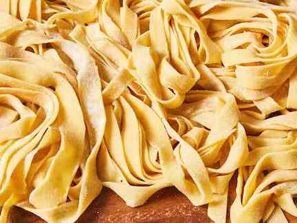

Pasta!
Almost every likes it! AND it can be made in SO many ways! I will only be listing some of my favorites.

Ways to Make Fruit:
#1: Plain Butter Pasta
this is the easiest when you have made pasta but dont feel like adding anything fancy. It can also be helpfull when you have leftovers and need to make it taste better. What i do is just cut up some salted butter and put it on. i avoid using olive oil because it has a different flavor. and in the end i add salt and pepper.